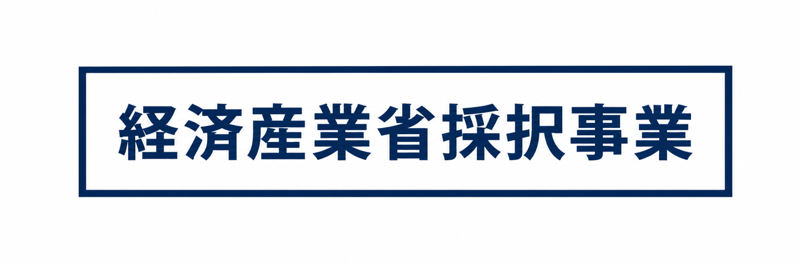
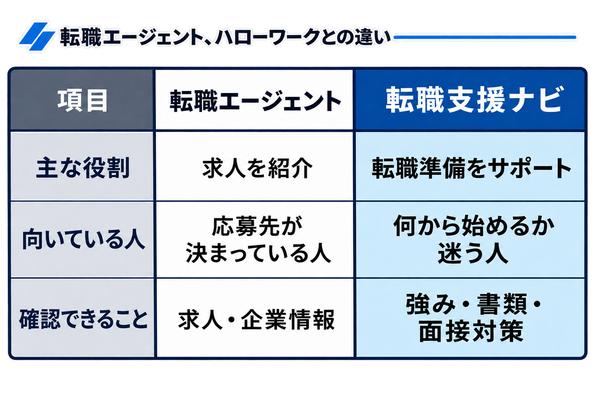
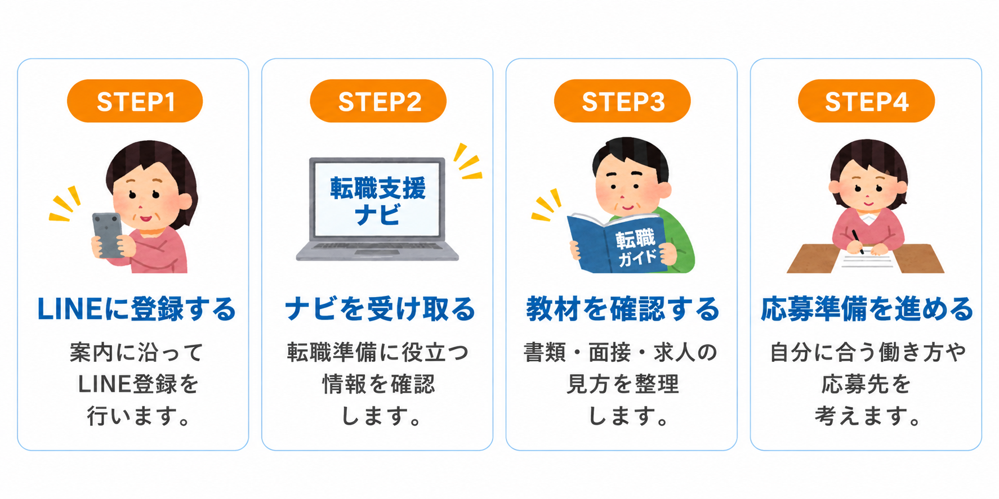
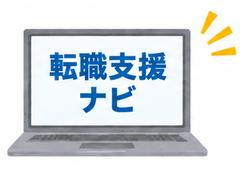
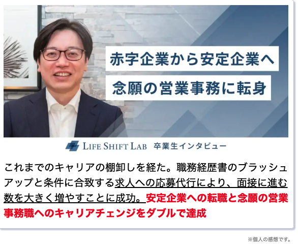
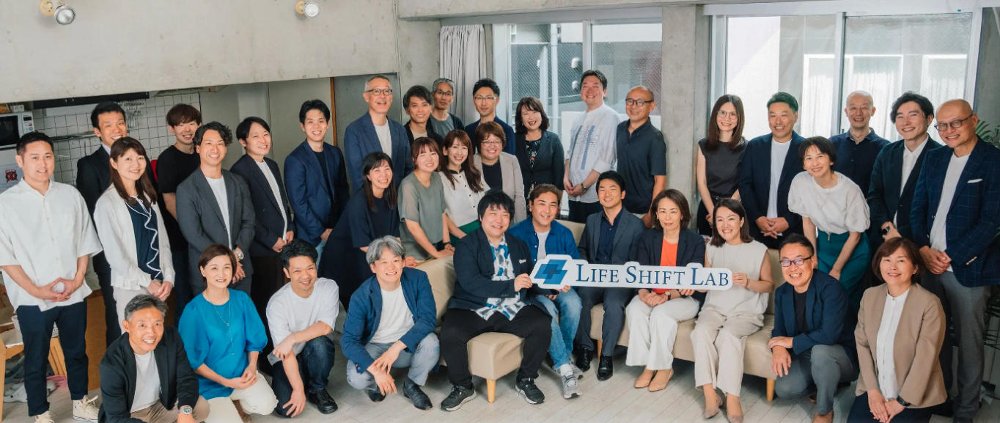

年間転職者の約6人に1人※が注目40代・50代が知るべき新常識。

「何から始めればいいかわからない」まま求人を探しても、転職はうまく進みません。
転職支援ナビでは、合格率を左右する応募前の準備をゼロから解説しています。
※2025年の45〜64歳の年間転職者約112万人と、LSL公式LINE累計登録者178,856人を単純比較。登録者は全年代を含みます。
ここからは、転職支援ナビで確認できる内容を、 順番に見ていきます。
転職支援ナビとは？

自分に合う仕事の軸が曖昧なまま求人を探すと、相談先や仕事選びを間違えてしまうことも。
まずは転職支援ナビで経験や希望条件を整理し、自分に合った転職の進め方を見つけましょう。
転職支援ナビで確認できること
転職ナビを受け取っていただいた方に
特別なご案内があります。
個別相談会に無料でご招待
※無料枠には限りがございますのでお早めにご予約ください。
個別相談会に無料でご参加いただける特別チケットをLINEで配布いたします。
40代・50代の転職を熟知したプロに、ご自身の強みや可能性から、今後の転職活動の進め方まで、直接ご相談いただけます。
ご利用の流れ

-
STEP1
LINEに登録する
案内に沿ってLINE登録を行います。
-
STEP2
ナビを受け取る
転職準備に役立つ情報を確認します。

-
STEP3
教材を確認する
書類・面接・求人の見方を整理します。
-
STEP4
応募準備を進める
自分に合う働き方や応募先を考えます。
よくあるご質問
Q. 転職支援ナビはどのような教材ですか？
40代・50代の転職準備をまとめた、全5章の動画教材です。LINEで届く案内からご確認いただけます。
Q. 教材の視聴に費用はかかりますか？
転職支援ナビは無料でご視聴いただけます。
Q. 個別相談チケットはどこで受け取れますか？
転職支援ナビを受け取った方へ、LINEで無料の個別相談チケットを配布しています。
Q. 個別相談チケットはどのように使えますか？
LINEから個別相談会をご予約いただけます。無料枠には限りがございますのでお早めにご使用ください。
Q. どんな人が受け取り対象ですか？
40代・50代で、転職に不安を感じている方や、これからの働き方を見直したい方に向けたナビです。
これまで積み重ねてきた経験を大切にしながら、新しい可能性を見つけるきっかけになればと願っています。
転職支援ナビをきっかけに、転職成功の声が続々

利用者事例インタビュー
55歳・異業種転職で内定2社&働きがいを実現
一人で止まっていた転職活動を立て直し、前職の経験を自己紹介の武器へ転換。そこからみるみる転職活動が進み、3カ月で内定2社を獲得した事例です。
3カ月で内定4社&年収アップ
54歳、営業・コールセンター経験を棚卸しし、190社への応募を継続。強みを言語化して、年収・ポジションアップにつながる転職を実現した事例です。
50代でも役職なしから、優良企業の管理職へ
過去のキャリアを丁寧に棚卸しし、自分では気づかなかった価値を言語化。50代からでも、管理職として再スタートを切れた事例です。
※転職支援ナビの利用のみで得られた成果ではありません。
最後に
40・50代転職にかける思い
40代・50代の転職では、「もう遅いのでは」「自分の経験は通用しないのでは」と感じる瞬間があるかもしれません。
しかし、長く働いてきた方には、その人にしか積み重ねられない経験や判断力があります。大切なのは、それを採用担当者に伝わる形に整理することです。
支援担当者は、年齢だけで可能性を狭めるのではなく、これまでの経験をどう活かせるか、どのような働き方が合っているかを一緒に考えることを大切にしています。
転職活動を一人で抱え込まず、まずはご自身の状況を落ち着いて見直すところから始めてみてください。

監修・取材協力佐藤 恒一
- 創業6年目のセプテーニに中途入社第一号社員として入社。約4年の在籍で社員数が5倍に成長したことから、個人の成長と会社の成長はリンクすることを実感。
- リクルートキャリアに転職。約15年間在籍し、大手製造業・経営幹部クラス人材・九州支社など、数々のグループで営業責任者を歴任。「人」によって企業が変わること、「働く喜び」によって個人が変わることを実感。
- 現在はミドルシニアのキャリア支援に携わり、転職準備や経験整理の支援を行っている。